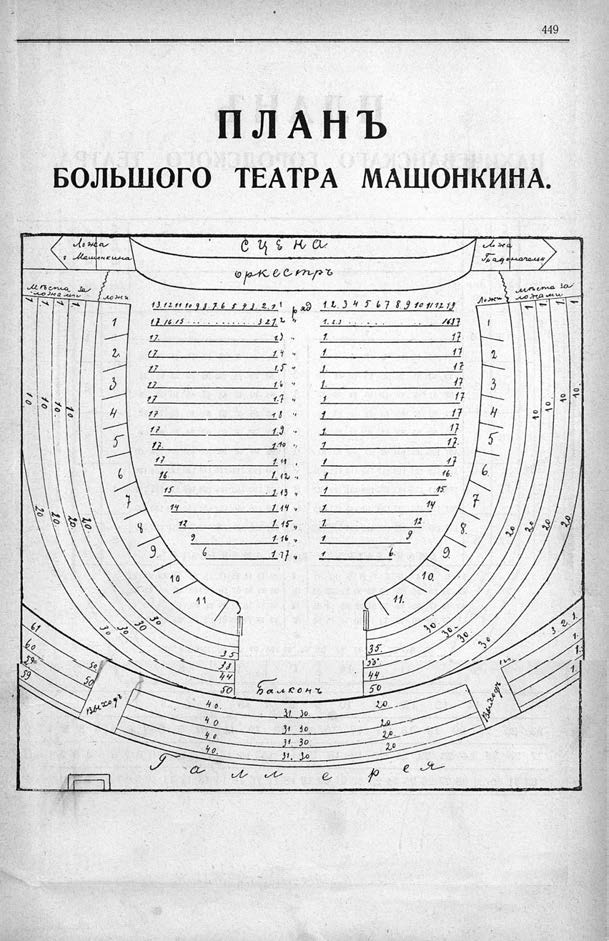

Лист источника 501
Скан

Распознанный текст
449
ПЛАНЪ
БОЛЬШОГО ТЕАТРА МАШОНКИНА.
Ложа
г Машонкина
СЦЕНА
Ложа
Градоначальн
оркестръ
Мѣста за
ложами
1.
1.
1.
1.
10.
10
10.
10.
20
20.
20
20.
61
60
59
59
30
30
30
30
50.
50
Выходъ
ложи
1
2.
3
4
5
6
7
8
9
10
11
13.12 11 10 9 8. 7. 6 5 4 3. 2. 1
17 16.15 ..... 3 2.1
17. 1
17 1
17 1.
17 1.
17 1
17 1.8 "
17 1.9 "
17. 1.10 "
17 1. 11
16 1. 12 "
15 1. 13 "
14 1 14 "
12 1 15 "
9 1. 16 "
6 1.17 "
ряд
2 "
3 "
4 "
5 "
6 "
7 "
1. 2. 3 4 5 6 7 8. 9 10 11 12 13
1. 2. 3 ... 16 17
1. 17
1 17
1 17
1. 17
1 17
1 17
1. 17
1 17.
1 17
1 16.
1 15.
1 14
1. 12.
1 9
1 6.
Ложи
1
2
3
4
5
6.
7
8.
9.
10.
11.
Мѣста за
ложами
1
1.
1.
1
10
10.
10
10.
20
20
20
20
3. 2. 1.
1.
1.
1.
10.
Выходъ
35
38
44
50
40.
40
40
40.
Балконъ
31. 30.
31 30.
31. 30.
31. 30
35.
38.
44.
50
20
20.
20.
20
30.
30.
30.
30
Галлерея